Omron has packed image sensing technology for inspection and measurement necessary for automation into compact devices.
The FH Series includes software for inspection and measurement in addition to cameras that can capture high-sensitivity and high-resolution images.
This vision system, substituted for the human eye, provides high-speed and high-precision inspection and measurement without complex programming and device combination.
Building Automation
Industrial Automation
Power Automation & Safety


Bangladesh Distributor
FH Series
Vision System
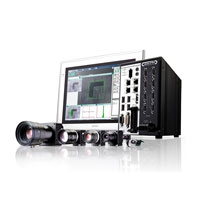
Like or even more than the human eye
about this Product Family
Related Contents
- Sensors
- Vision Sensors / Machine Vision Systems
- Features
- Lineup
- Specifications
- Dimensions
- Catalog
last update: November 17, 2016
Best-in class image sensing speed and precision - like or even more than the human eye
A complete line-up of cameras for various applications
For applications requiring high speed and high resolution
Lens mount camera
You can select the best combination of camera and lens for your application.
Rolling shutter camera added to the line-up
The benefits of cost-effective rolling shutter cameras are now being recognized once again.
The rolling shutter camera scans the pixels of each line. Although this produces distortions of moving objects, high-resolution yet cost-effective inspection and measurement can be performed.
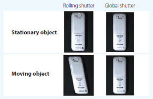
Easy to install into machines
Camera with built-in light
The all-in-one camera including the light and lens can be easily integrated into almost any machine.
* The FQ2 Smart Cameras are also available.
High-power lighting
The sensor has a built-in high-power light capable of evenly lighting across a wide field of view.
This provides sufficient lighting even when the enclosed polarizing filter is used.
Adjustable lens
The focus of the lens can be adjusted to take clear images for the specific field of view and installation distance you need.
For narrow space
Small camera
The ultra-compact lens can be installed into limited space in a machine. Select the flat or pen type depending on space.
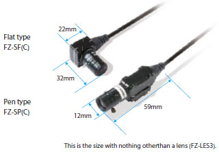
Powerful controllers for fast and precise inspection and measurement
You can select the best controller to suit requirements.
All controllers can share the same settings, bringing flexibility to machine design.
Image transfer without delay
The FH-3050/-1050 Series has a high-performance bus to transfer images, maximizing the specifications of any connected camera.
Object detection algorithm Shape Search Ⅲ for fast and precise inspection and measurement
High-precision object detection
Low-error position detection even with blurry images
Over many years, Omron has perfected techniques to search for and match templates at high speed.
This experience and expertise enables us to develop the Shape Search Ⅲ vision algorithm, which provides advanced robustness and is critical on FA sites.
When measuring lamination of glass or other processes where the distance to the workpiece from the camera varies, size differences and focal shifts can occur.
Even in cases like this, the new Shape Search Ⅲ algorithm detects positions with limited error.
Stable searching with limited error even under adverse conditions
Stable searching is possible even under the following adverse conditions, which occur far too often in actual measurement applications.
Detection of multiple workpieces
Even if many workpieces are within the field of view, searching is possible without compromising detection accuracy.
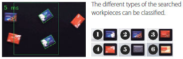
Detection of workpieces from background noise and detection of shiny workpieces
Stable searching is possible without being affected by the background or gloss.
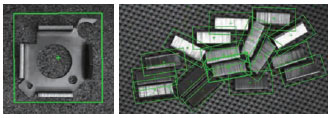
What is Think & See?
Powerful core technologies for image sensing.
Omron is continuously developing technologies to measure, detect, or identify the positions, orientations, shapes, materials, colors, status, or attributes of things, people, vehicles, or other objects faster, more precisely, and more easily than the human eye under various conditions. Shape Search III is based on the Think & See technology.
http://www.omron.com/technology/core/thinkAndSee/
Ultra-high-speed searching: 9 times faster than before
New technology makes search algorithms up to nine times faster than before. Even for unstable image conditions (including light interference, overlapping shapes, gloss, and incomplete images), stable searching is now possible without reducing speed.
Visualization of comparisons enables easy setting of high-precision searching (Patent Pending)
Advanced searching is accompanied by many parameters that must be tuned to match the application. However, it is difficult for the person making the settings to see the internal process. Normally, a lot of time and effort is required to maximize tool performance.
But with Shape Search Ⅲ, you can visualize comparisons between the model data and a part of the measurement object to easily see when comparisons are not optimally matched.
Visualization of the comparison level allows for parameters to be adjusted to quickly obtain the best performance.
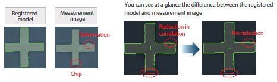
You can adjust a parameter called the Acceptable Distortion Level to enable measurements without reducing the correlation even if there is distortion.
You can easily adjust this parameter while monitoring the comparison.
Preinstalled GUIs - for designers and for operators
GUI for operators
Operation interfaces are preinstalled in the FH Series.
You can display operation interfaces just by switching screens, without time-consuming interface development work.
GUI for designers
The setting of inspection and measurement can be done by combining processing items to create a flow.
GUI for detailed setting for measurement conditions allows intuitive operation.
Choose any of nine languages
You can change display messages between nine different languages: English, Chinese, Japanese and other languages. Display the best language for the user for applications in other countries.
Touch screen ideal for on-site operation
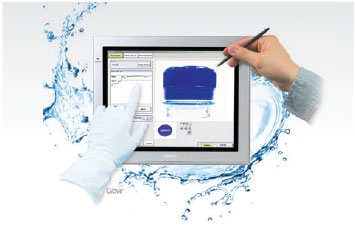
The IP65-certified touch screen for the FH Series is available (FH-MT12).
The resistive film method allows easy operation with a gloved hand
Easy customization of interface
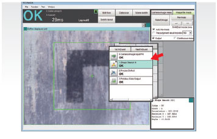
You can easily customize the preinstalled interfaces just by dragging and dropping.
Inspection flow design
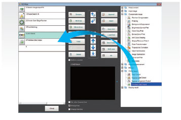
Drag and drop processing items to create inspection and measurement flows.
Flow creation at production sites, offline flow creation, and simulations are possible.
Simple programming
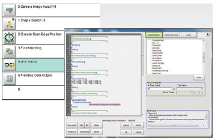
User-defined macro can be used for complex data processing that cannot be performed by inspection flows.
The BASIC-like programming language facilitates the macro creation.
Flexible functionalities to provide high compatibility with manufacturing machines
Remote operation via Ethernet
The Remote Operation Tool is provided to control the FH Series from a remote location via Ethernet. Just install the tool on your PC and specify the IP address.
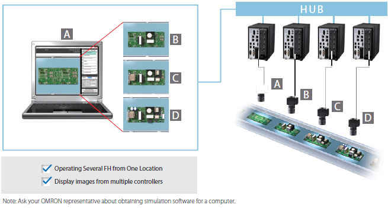
Integration into user applications
Microsoft.Net software components are supported to integrate the FH interfaces into a PC-based HMI.
You can add components that display FH screens and measurement results to your HMI software just by dragging and dropping.
Integrated development environment
The Automation Software Sysmac Studio integrates setting and operation of the NJ/NX Machine Automation Controller and FH Series.
Simulate and debug motion control, logic, drives, and sensing on an integrated platform to reduce the work required for machine design.
Software customization
The Application Producer (FH-AP1) provides a development environment that lets you customize software preinstalled in the FH Controller.
Original interfaces created with Microsoft Visual Studio can be used with the FH Controller.
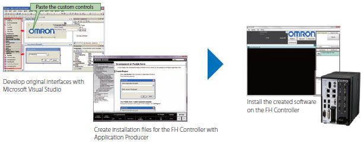
last update: November 17, 2016